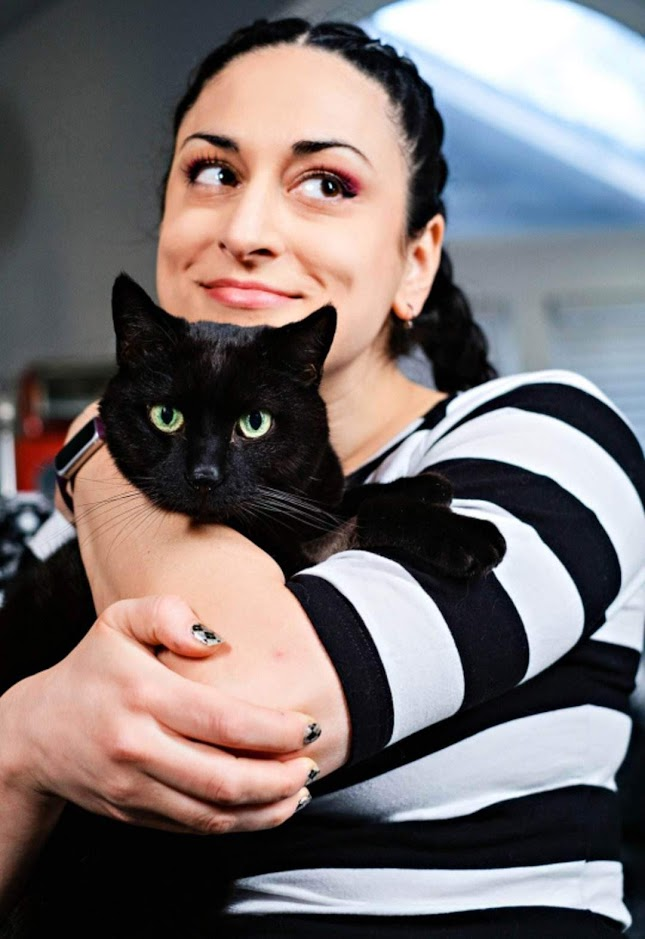

The elevator pitch
Hi! I’m La.
My background is a mix of human-centered design and live entertainment. I’ve spent a decade designing digital products & interfaces — for brands like American Express, Mastercard, CVS & MARTA — and years in theatre, immersive experiences & live production. Where I thrive is the overlap: how guests experience, explore & interact with entertainment. I can present the story, design the engagement, and run the show — and I’d love to do at least one of those for you.
About
Who’s La?

Save your photo asassets/img/portrait.jpg
I blend UX and systems thinking into everything I do — from responsive web and interface design to producing immersive theatrical experiences.
What I do best
Tools I live in
What I deliver
A few things that are true about me
- 1I have a BA in Studio Art and a psych minor — the taste and the “why people do that” came before the pixels.
- 2My grad research (a second-screen companion for the Marvel Cinematic Universe) was published and presented at ACM TVX in Brussels.
- 3I’ve dabbled in Unreal Engine and SketchUp, user tested in AR/VR, and generally enjoy hacking at technologies until things work.
- 4I’ve mentored junior designers and interns — I learned this craft from generous people and I pay it forward.
- 5I’m a roller coaster enthusiast with 200+ coasters logged — yes, I’m at IAAPA partly for the rides. Mostly for you, though. Mostly.
Wondering what else I’ve done?
Just ask →
A few more I’ve designed for
- CVS
- Verizon
- Delta
- Cox
- TGI Fridays
- Moe’s
- Kimberly-Clark
- Rachael Ray
- Yamaha
- Southern Co.
- Saia
- AmericasMart
- WellVisor
- Beam Living
- Ripley’s Believe It or Not!
- The Center for Puppetry Arts